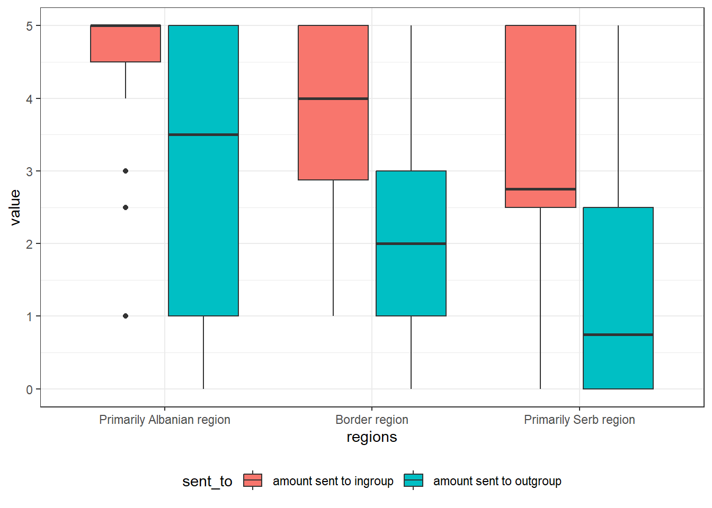
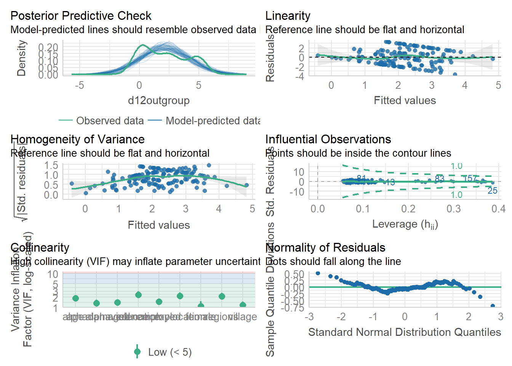

samplocation = location where sampling was conducted (primary sampling unit)
explocation = location of the lab where the experiment took place. The Gracanica and Mitrovica labs were located in restaurant conference rooms. The Leposavic and Zubin Potok labs were located in community center conference rooms.
expgroup = number for the experimental group. All subjects completed the experiments in groups of 18-20 at the same time, with a local administrator reading from a standard script.
date = date when experimental group session took place.
serb = dummy variable indicating that all subjects are ethnic Serbs.
d12ingroup = amount sent in the dictator game to an in-group recipient.
d12outgroup = amount sent in the dictator game to an out-group recipient.
d12ingroupbias = dummy variable where 1 = subject gave more to in-group recipient than out-group recipient in the dictator game. 0 = otherwise.
d12sametreatment = dummy variable where 1 = subject gave the same amount to in-group recipient as out-group recipient in the dictator game. 0 = otherwise.
borderregion = dummy variable for border region (North Mitrovica)
serbregion = dummy variable for Primarily Serb region (North Kosovo)
albregion = dummy variable for Primarily Albanian region (South Kosovo)
regions = three category variable for location of subjects (0 = Primarily Albanian region, 1 = border region, 2 = Primarily Serb region). This variable is used to make the box-whisker plot in the manuscript.
Demographics
female 1 = female subject, 0 = male subject
age age in years
education 1 = no formal education to 10 = advanced higher education.
replicate figure 1
Figure 1 looks similar to one present in the data, so we have an sign that data provided for the replication is the same data as was used for the creating visualization.
df |>select(regions, d12ingroup, d12outgroup, id) |>pivot_longer(cols =c(d12ingroup, d12outgroup), names_to ="sent_to") |>mutate(sent_to = sent_to |>factor(labels =c("amount sent to ingroup", "amount sent to outgroup"))) |>ggplot(aes(x = regions, y = value, fill = sent_to))+geom_boxplot()+# stat_slab(side = "left", scale = 0.75, position = "dodge")+# stat_dots(side = "right", scale = 0.75, position = "dodge")+# stat_dotsinterval(scale = 0.5, quantiles = 100, position = "dodge") +theme_bw()+theme(legend.position ="bottom")

modify data
I will use Primarily Serb region as a base level to follow the original paper and encode all educational levels
Indeed there is a significant difference between Primarily Albanian region and Primarily Serb region in the amount of money participants gifted to outgroup. Therefore we have an indicator to reject null hypothesis in favor of alternative.
Kruskal-Wallis
Given that depended (d12outgroup) variable has only 10 levels we need to double check, if the relation going to be lost with more conservative non-parametric test
After looking at the Kruskall-Wallis results we could indeed validate that there is a difference between participants from different regions in terms of median amount of money that was gifted to outer group
Dunn test indicates that there is a significant difference Between primary Serb region and primary Albanian region
Model with controls
To see if there any other parameters in the model let’s add all the controls from the data.
explocation variable should absorb selection bias, since it corresponds to a different location of data collection
df_clean |>lm( d12outgroup ~ regions + female + age + education + employed + village+ alphaviolence + alphadamaged + explocation,data = _ ) -> m2_controlsstargazer::stargazer(m2_controls, type ="text", single.row=TRUE)
The difference between Primarily Albanian region and Primarily Serb region is significant and positive, so we could conclude that exposure to out-group increases altruism towards out-group, given the present control variables
diagnostics
check_model(m2_controls)

Diagnosis looks good enough
citations
citation("performance")
To cite package 'performance' in publications use:
Lüdecke et al., (2021). performance: An R Package for Assessment,
Comparison and Testing of Statistical Models. Journal of Open Source
Software, 6(60), 3139. https://doi.org/10.21105/joss.03139
A BibTeX entry for LaTeX users is
@Article{,
title = {{performance}: An {R} Package for Assessment, Comparison and Testing of Statistical Models},
author = {Daniel Lüdecke and Mattan S. Ben-Shachar and Indrajeet Patil and Philip Waggoner and Dominique Makowski},
year = {2021},
journal = {Journal of Open Source Software},
volume = {6},
number = {60},
pages = {3139},
doi = {10.21105/joss.03139},
}
citation("stargazer")
Please cite stargazer in publications as:
Hlavac, Marek (2022). stargazer: Well-Formatted Regression and
Summary Statistics Tables. R package version 5.2.3.
https://CRAN.R-project.org/package=stargazer
A BibTeX entry for LaTeX users is
@Manual{,
title = {stargazer: Well-Formatted Regression and Summary Statistics Tables},
author = {Marek Hlavac},
year = {2022},
note = {R package version 5.2.3},
organization = {Social Policy Institute},
address = {Bratislava, Slovakia},
url = {https://CRAN.R-project.org/package=stargazer},
}
citation("ggstatsplot")
To cite package 'ggstatsplot' in publications use:
Patil, I. (2021). Visualizations with statistical details: The
'ggstatsplot' approach. Journal of Open Source Software, 6(61), 3167,
doi:10.21105/joss.03167
A BibTeX entry for LaTeX users is
@Article{,
doi = {10.21105/joss.03167},
url = {https://doi.org/10.21105/joss.03167},
year = {2021},
publisher = {{The Open Journal}},
volume = {6},
number = {61},
pages = {3167},
author = {Indrajeet Patil},
title = {{Visualizations with statistical details: The {'ggstatsplot'} approach}},
journal = {{Journal of Open Source Software}},
}